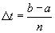
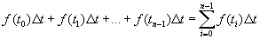
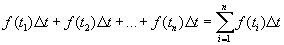
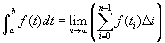
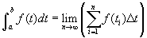
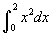

A Riemann Sum is a method for approximating the total area underneath a curve on a graph, otherwise known as an integral. It may also be used to define the integration operation. This page explores this idea with an interactive calculus applet.
On the preceding pages we computed the net distance traveled given data about the velocity of a car. We saw that as we increased the number of intervals (and decreased the width of the rectangles) the sum of the areas of the rectangles approached the area under the curve.
On this page we will generalize this and write it more precisely. Let f (t) be a function that is continuous on the interval a ≤ t ≤ b. Divide this interval into n equal width subintervals, each of which has a width of

Let ti be the ith endpoint of these subintervals, where t0 = a, tn = b, and ti = a + iΔt. We can then write the left-hand sum and the right-hand sum as:Left-hand sum =

Right-hand sum =

These sums, which add up the value of some function times a small amount of the independent variable are called Riemann sums. If we take the limit as n approaches infinity and Δt approached zero, we get the exact value for the area under the curve represented by the function. This is called the definite integral and is written as:
Limit of left hand sum =

Limit of right hand sum =

The s-shaped curve is called the integral sign, a and b are the limits of integration, and the function f (t) is the integrand. The dt tells you which variable is being integrated (which will not be of much importance until you get to multivariable calculus). By convention the dt is written last.
Note that in the limit as n approaches infinity, the left-hand and right-hand Riemann sums become equal. Also note that the variable does not have to be t or time. An example of an integral for a function of x is

which means to divide up the interval from 0 to 2 into subintervals, sum up the areas of these rectangles (where the height is just x²), and take the limit of this sum as the number of subintervals goes to infinity. We can calculate the value of a definite integral using a calculator or software and letting n be some large number, like 1,000. Later we will learn how to compute the limits in some cases to find a more exact answer.